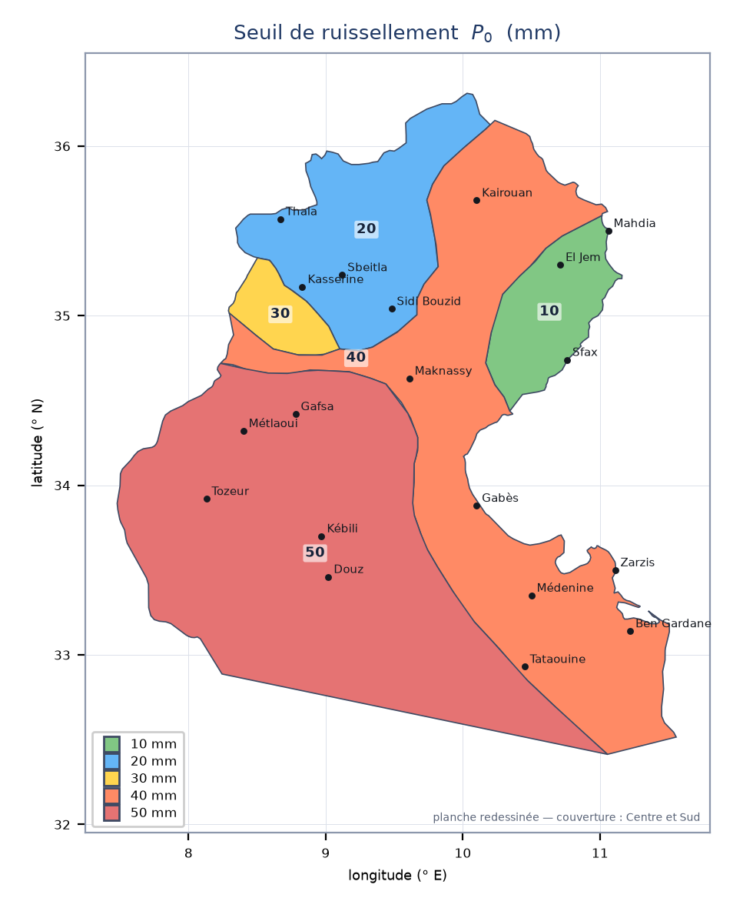
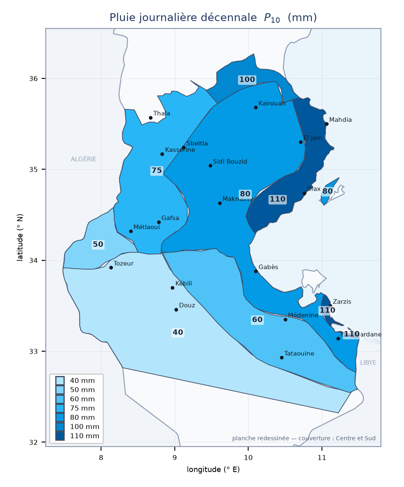
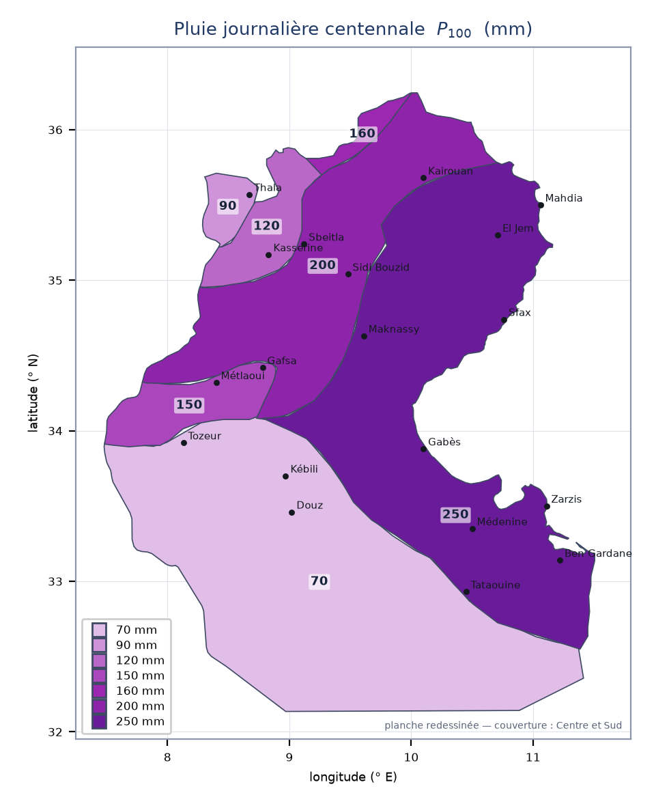

1 · Le bassin versant
Délimiter
Le bassin versant d'un franchissement, c'est la surface qui draine vers ce point. L'exutoire n'est donc pas un lieu naturel : c'est l'ouvrage lui-même qui le fixe. Déplacer le franchissement de deux cents mètres change le bassin, donc le débit.
La limite est la ligne de partage des eaux : elle passe par les points hauts, coupe les courbes de niveau à angle droit et se referme sur l'exutoire. Une ligne qui recoupe un talweg est fausse — l'eau la traverserait.
Un bassin versant, délimité
Bassin obtenu par la chaîne décrite ci-dessus, appliquée à un modèle numérique de terrain : comblement des cuvettes, direction de plus grande pente cellule par cellule, accumulation des surfaces drainées, puis remontée depuis l'exutoire. La ligne de partage des eaux n'est pas dessinée à la main — elle est le bord de l'ensemble des cellules qui s'écoulent vers ce point.
Surface et périmètre
La surface se mesure par planimétrage ou par un logiciel de cartographie. Le périmètre demande plus de précaution : il dépend de la finesse du tracé. Un contour suivi au détail près est plus long que le même contour généralisé — et comme l'indice de compacité est proportionnel à P, il s'en trouve gonflé.
Règle pratique : relever la surface et le périmètre sur la même carte, à la même échelle, et écrire cette échelle dans la note. Un Ic sans son échelle n'est pas comparable à un autre.
La forme : indice de compacité de Gravelius
Ic = P / (2√(πS)) = 0,2821 · P / √S
C'est le rapport entre le périmètre du bassin et celui du disque de même surface. Le disque minimise le périmètre à surface donnée : Ic ne peut pas descendre sous 1,128. Une valeur inférieure n'est pas un bassin exceptionnellement ramassé — c'est une erreur de mesure.
Plus Ic est grand, plus le bassin est allongé, plus les apports arrivent étalés dans le temps : à surface égale, un bassin allongé donne une pointe plus faible qu'un bassin ramassé. C'est pourquoi Ic figure au dénominateur de la formule de Ghorbel.
Le rectangle équivalent
C'est le rectangle qui aurait la même surface et le même indice de compacité que le bassin. Il n'a pas d'existence physique : c'est une longueur de référence, celle que l'on divise pour obtenir l'indice global de pente.
f = Ic√S / 1,128 · L, l = f · [ 1 ± √(1 − (1,128/Ic)²) ]
Contrôle immédiat : L × l doit redonner S. S'il ne le fait pas, c'est que Ic est passé sous 1,128 et que le rectangle a dégénéré en carré.
Rectangle équivalent, à l'échelle
Le relief : la courbe hypsométrique
On relève, pour une série d'altitudes, la part de la surface du bassin située au-dessus. La courbe obtenue donne d'un coup d'œil le relief, et fournit les altitudes caractéristiques.
| Altitude | Définition | À quoi elle sert |
|---|---|---|
| H 5 % | dépassée par 5 % de la surface | borne haute de l'indice global de pente |
| H 50 % — médiane | moitié de la surface au-dessus | Δh de Ghorbel, avec l'altitude au franchissement |
| H 95 % | dépassée par 95 % de la surface | borne basse de l'indice global de pente |
| H moyenne | moyenne pondérée par les surfaces | dénivelée moyenne de Giandotti, avec H min |
Pourquoi 5 % et 95 % plutôt que H max et H min ? Parce qu'un sommet isolé ou un point bas d'un seul pixel ne représentent presque aucune surface et ne commandent aucun écoulement. Les quantiles écartent ces extrêmes ponctuels.
Lire la courbe hypsométrique
Le même bassin. À gauche la carte, à droite la courbe : deux vues de la même information. Déplacer l'altitude fait ressortir la courbe de niveau correspondante et le point de la courbe — c'est exactement la lecture qu'on fait sur une carte papier, courbe après courbe.
Deux indices de pente qu'on ne peut pas confondre
| Indice global Ig | Pente équivalente Ieq | |
|---|---|---|
| Formule | (H 5 % − H 95 %) / Lrectangle | (L / Σ li/√ii)² |
| Unité | m/km | % (m/m) |
| Ce qu'il décrit | le relief du bassin | le temps de parcours de l'écoulement |
| Construit sur | la courbe hypsométrique et le rectangle équivalent | le profil en long, bief par bief |
La pente équivalente est celle d'un chenal uniforme que l'eau mettrait le même temps à parcourir. Comme la vitesse varie en √i, les biefs plats pèsent lourd dans la somme : on a presque toujours Ieq < D/L, et l'écart se creuse quand le profil est irrégulier.
La densité de drainage
Dd = Σ longueurs du réseau / S (km/km²)
Elle mesure la finesse du chevelu hydrographique : une densité élevée signale un terrain peu perméable, un ruissellement rapide et concentré. Comme le périmètre, elle dépend de l'échelle de la carte sur laquelle le réseau a été relevé — un 1/25 000 montre des talwegs que le 1/200 000 ignore. La valeur ne vaut rien sans son échelle.
Les trois altitudes à ne jamais confondre
| Grandeur | Définition | Où elle sert |
|---|---|---|
| Δh | H médiane − altitude au franchissement | Ghorbel, zones I à III |
| Hmoy | H moyenne − H min | Giandotti |
| D | altitude de tête − altitude de l'exutoire, le long du profil | Kirpich |
Aucune des trois n'est le dénivelé total H max − H min. Employer ce dernier à leur place majore le débit de 30 à 70 % chez Ghorbel, et raccourcit à tort le temps de concentration chez Giandotti.
2 · Les pluies
Mesurer : deux appareils, deux usages
| Appareil | Ce qu'il donne | Ce qu'on en tire |
|---|---|---|
| Pluviomètre | le cumul entre deux relevés, en général journalier | pluies journalières, séries longues, cartes P10 et P100 |
| Pluviographe | l'enregistrement continu de la hauteur au cours du temps | intensités sur de courtes durées, courbes IDF (chapitre 3) |
Les pluviomètres sont nombreux et leurs séries anciennes ; les pluviographes sont rares et leurs séries courtes. D'où la division du travail : la statistique des pluies journalières s'appuie sur les premiers, les courbes intensité–durée–fréquence sur les seconds.
La série des maxima annuels
Pour caractériser les pluies rares, on ne travaille pas sur toutes les pluies observées mais sur le plus fort événement de chaque année : une valeur par an, autant de valeurs que d'années d'observation. Cette construction garantit l'indépendance des valeurs — deux maxima d'années différentes ne proviennent pas de la même averse.
Trois hypothèses à vérifier avant d'ajuster
Ajuster une loi à une série suppose trois choses, et ces trois choses se testent :
| Hypothèse | Ce qu'elle affirme | Ce qui la met en défaut |
|---|---|---|
| Stationnarité | la loi ne change pas au cours du temps | tendance climatique, urbanisation du bassin, barrage |
| Indépendance | une année ne renseigne pas sur la suivante | persistance pluriannuelle, série non chronologique |
| Homogénéité | toutes les valeurs mesurent la même chose | déplacement du poste, changement d'appareil ou d'observateur |
Une série qui les met en défaut peut toujours s'ajuster techniquement : la formule ne proteste pas. C'est le sens du résultat qui disparaît. Un quantile centennal calculé sur une série non stationnaire ne décrit ni le passé ni l'avenir — il décrit une moyenne entre deux régimes dont aucun n'a existé.
Quatre tests non paramétriques suffisent. Aucun ne suppose de loi : ils travaillent sur les signes et les rangs, ce qui est exactement ce qu'il faut sur des maxima.
| Test | Statistique | Ce qu'il cherche |
|---|---|---|
| Mann-Kendall | S = ΣΣ signe(xj − xi) | une tendance monotone, dans un sens ou dans l'autre |
| Wald-Wolfowitz | R = Σ xi·xi+1 + x1·xn | une autocorrélation d'une année sur l'autre |
| Wilcoxon-Mann-Whitney | somme des rangs de la première moitié | un décalage de niveau entre début et fin de période |
| Pettitt | K = maxt |Ut| | une rupture, sans en fixer la date à l'avance |
Contrôler la série
Ce qu'un test ne dit pas
« Hypothèse conservée » ne signifie pas « hypothèse vraie ». Cela signifie « non détecté avec cette série-là », et la nuance est énorme sur les longueurs dont on dispose. Sur une série de 20 ans portant une tendance réelle d'un demi écart-type sur toute la période, Mann-Kendall ne la détecte que 8 fois sur 100. À 50 ans, 16 fois. À 100 ans, 28 fois.
Autrement dit : sur vingt ans, un test qui ne rejette rien n'apporte presque aucune information. Ce qui reste vrai, et utile, c'est l'inverse — un test qui rejette sur une série courte signale quelque chose de franc, qu'il faut aller comprendre dans l'histoire du poste avant de toucher au calcul.
Ajuster : la loi de Gumbel
Les maxima annuels suivent bien, en climat méditerranéen et semi-aride, la loi de Gumbel. Sa fonction de répartition s'écrit
F(x) = exp[ −exp( −(x − u)/a ) ] · y = (x − u)/a · x = u + a · y
où u est le mode et a le gradex, qui mesure l'étalement de la distribution. La variable réduite y est la grandeur dans laquelle la loi devient une droite — c'est tout l'intérêt du papier de Gumbel.
Par la méthode des moments, à partir de la moyenne μ et de l'écart-type σ de la série :
a = σ·√6/π = 0,7797·σ · u = μ − 0,5772·a
La période de retour se relie à la fréquence au non-dépassement par F = 1 − 1/T, d'où la variable réduite déjà rencontrée :
yT = −ln[ −ln(1 − 1/T) ]
Juger l'ajustement
On place les valeurs observées sur le papier de Gumbel pour voir si elles s'alignent. La valeur de rang i (1 pour la plus forte) parmi n se voit attribuer une fréquence empirique, dite position de tracage :
F = 1 − i/(n+1) (Weibull) · F = 1 − (i − 0,5)/n (Hazen)
Le maximum d'une série de 20 ans se place ainsi à T = 21 ans selon Weibull. Il ne se place jamais à T = 20 ans : la plus forte valeur observée n'a pas une période de retour égale à la durée d'observation.
Pourquoi c'est une droite — et ce qui ne l'est pas
La relation x = u + a·y est affine en y. En portant la variable réduite y en abscisse et la pluie en ordonnée, la loi de Gumbel devient donc exactement une droite, de pente le gradex a et d'ordonnée à l'origine le mode u. C'est toute la raison d'être de la variable réduite, et du papier qui porte son nom : linéariser la loi pour que l'œil puisse juger. Un alignement se voit ; une courbure aussi.
Ce papier n'est pas neutre pour autant : il est construit pour Gumbel. Les autres lois y apparaissent courbes, et c'est précisément ce qui permet de les distinguer :
| Loi | Sur papier de Gumbel |
|---|---|
| Gumbel | droite, par construction |
| GEV avec k < 0 | concave vers le haut — la queue s'alourdit |
| GEV avec k > 0 | convexe, tendant vers une borne supérieure finie |
| Log-normale | courbe, jamais droite |
| Exponentielle | droite en ln T, donc courbe en y |
Cinq lois, et où elles se séparent
| Loi | Paramètres | Estimation | Remarque |
|---|---|---|---|
| Gumbel | u, a | moments | la référence en climat méditerranéen et semi-aride |
| GEV | ξ, α, k | L-moments | généralise Gumbel ; k = 0 la redonne exactement |
| Log-normale (Galton) | μln, σln | moments sur ln x | loi normale sur les logarithmes |
| Pearson III | μ, σ, Cs | moments + Wilson-Hilferty | l'approximation perd sa validité au-delà de |Cs| = 2 |
| Exponentielle | x₀, b | moments | un seul paramètre de forme ; borne de comparaison |
Les L-moments qui servent à ajuster la GEV se construisent sur des combinaisons de statistiques d'ordre plutôt que sur des puissances des écarts. Un moment d'ordre 3 élève au cube : une seule valeur extrême y pèse démesurément. Un L-moment, non. Sur des séries de vingt à trente ans où l'extrême est justement ce qu'on cherche à décrire, la différence n'est pas académique.
L'incertitude, et où elle est vraiment
Un quantile est une estimation, pas une mesure. Deux façons d'en chiffrer l'incertitude :
Kite (Gumbel seul) : Se = (σ/√n)·√(1 + 1,1396·K + 1,1·K²) · K = (yT − 0,5772)·√6/π · xT ± tn−1·Se
et le rééchantillonnage (bootstrap), applicable à n'importe quelle loi : on retire des échantillons de même taille avec remise, on réajuste à chaque fois, et on lit les percentiles des quantiles obtenus.
L'ordre de grandeur qui change tout
Sur la série de 20 ans du calculateur, les cinq lois donnent au centennal des valeurs allant de 121 à 145 mm — un écart de 20 %, qui semble considérable. Mais l'intervalle de confiance à 95 % de la seule loi de Gumbel va de 77 à 164 mm. L'incertitude d'échantillonnage est donc plus large que l'écart entre les lois.
Conséquence pratique : sur vingt ans de données, débattre du choix de la loi revient à discuter d'un effet plus petit que le bruit. Ce qui mérite l'attention, c'est la longueur de la série et la cohérence régionale — pas le raffinement de l'ajustement.
Ajuster, comparer, encadrer
Sur la série saisie plus haut. En abscisse la variable réduite de Gumbel : c'est le papier sur lequel Gumbel est une droite, et sur lequel les autres lois se reconnaissent à leur courbure.
Des points aux cartes
Chaque poste ajusté fournit ses quantiles ; l'interpolation entre postes donne les cartes de pluie journalière régionales, dont P10 et P100 utilisées par la méthode SOGREAH (chapitre 4), ainsi que la carte du seuil de ruissellement P0. Une lecture de carte est donc une valeur ajustée, puis interpolée : deux sources d'incertitude qui se cumulent, et une raison de plus de reporter les coordonnées du point lu.
Pluie ponctuelle et pluie de bassin : l'abattement
La pluie lue en un point n'est pas la pluie moyenne tombée sur le bassin : une averse intense couvre rarement plusieurs dizaines de kilomètres carrés avec la même intensité. Le rapport entre les deux est le coefficient d'abattement, d'autant plus faible que le bassin est grand. Le bulletin FAO n° 54 en donne une forme explicite :
A = 1 − [ (161 − 0,042·Pan) / 1000 ] · log10(S)
3 · Averse de projet et temps de concentration
La courbe intensité–durée–fréquence
Ajustée sur les enregistrements d'une station, la courbe IDF se met sous la forme
i = a · t−b · Tc i en mm/h · t = durée de la pluie, prise égale à tc · T en années
a, b et c sont trois constantes de la station :
a fixe le niveau, b la décroissance avec la durée,
c la croissance avec la période de retour. La période de retour entre
analytiquement : toute valeur de T se calcule, y compris celles qui
ne figurent dans aucune table.
c est
l'exposant de la période de retour, sans dimension. Dans la variante de Talbot
i = a / (t + c)b, c est un décalage de durée,
homogène à un temps. Un jeu de coefficients appliqué à la mauvaise forme donne un
résultat faux sans qu'aucun contrôle interne ne s'en aperçoive.Deux règles de manipulation
Unité de la durée. a et b ne valent que dans
l'unité de durée du calage. Les deux lectures se déduisent l'une de l'autre par un
facteur exact : i(heures) / i(minutes) = 60b, soit environ 13
pour b ≈ 0,63.
Plage de durées. t est borné par le bas par la plus petite
durée couverte par l'ajustement, souvent 5 min : une courbe IDF ne s'extrapole pas
sous sa durée de calage.
Contrôle d'ordre de grandeur
La lame d'eau i × tc doit rester nettement inférieure à la
pluie journalière décennale du site, lue sur la carte P10 — l'ordre du
tiers de P10 est courant pour une averse de quelques dizaines de minutes.
Sous climat tunisien, i(T = 10 ans) vaut typiquement 20 à 60 mm/h pour tc de 30 à 60 min. Plusieurs centaines de mm/h sur une durée horaire signalent une erreur de forme ou d'unité, pas un orage exceptionnel.
Tracer la courbe
Les quatre temps de concentration
| Formule | Expression | Unité du résultat |
|---|---|---|
| Kirpich | tc = 0,0195 · (L³/D)0,385 — L et D en mètres | minutes |
| Ventura | tc = 76 · √(S/i) | minutes |
| Passini | tc = 0,108 · (S·L)⅓ / √(i/100) | heures |
| Giandotti | tc = (4√S + 1,5 L) / (0,8 √Hmoy) | heures |
Kirpich et Ventura rendent des minutes, Passini et Giandotti des heures : deux colonnes voisines se comparent sinon à un facteur 60 près. Une seule formule est retenue et injectée dans la courbe IDF — le choix doit être écrit.
4 · Débits de projet
Deux voies indépendantes
La voie rationnelle passe par la pluie de projet : morphométrie → temps de concentration → intensité → débit. Les régionalisations court-circuitent la pluie et relient directement le débit aux caractéristiques du bassin. C'est leur confrontation qui fait la qualité de l'estimation, jamais une méthode seule.
Q = 0,278 · C · i · S Q en m³/s · i en mm/h · S en km² (domaine : S < 4 km²)
Le coefficient de ruissellement
| Classe de pente | indice 1 | indice 2 | indice 3 |
|---|---|---|---|
| faible (0–2 %) ou moyenne (2–8 %) | 0,40 | 0,50 | 0,60 |
| forte (> 8 %) | 0,50 | 0,60 | 0,70 |
Indice de végétation selon la part du bassin couverte : 1 = plus de 50 % · 2 = 30 à 50 % · 3 = moins de 30 %. Le tableau a deux lignes, pas trois : seule la frontière à 8 % change le résultat. Q étant linéaire en C, un changement d'indice vaut 20 % de débit.
Lire l'abaque
SOGREAH et ses cartes
PT = P10 + (YT − 2,25)/(4,60 − 2,25) · (P100 − P10) puis QT = S0,75 · (PT − P0) / 12
Trois lectures de cartes suffisent. On lit au centre de gravité du bassin, jamais au franchissement ; les zones sont des plages, sans interpolation ; et la lecture se reporte dans la note avec les coordonnées du point lu. Contrôle obligatoire : P0 < P10 < P100.



Deux traits à retenir : le seuil de ruissellement croît vers le Sud — sols secs et perméables, il faut plus de pluie avant que le ruissellement démarre — tandis que la pluie journalière rare croît vers la côte Est et le Sud-Est. Les deux effets se combinent dans (PT − P0).
Les régionalisations tunisiennes
Six méthodes, six familles de coefficients calés sur des jeux de bassins différents. Aucune n'est « la bonne » : chacune résume une région et une époque d'observation. Leur intérêt est d'être indépendantes — c'est leur dispersion qui informe, pas leur moyenne.
SOGREAH
QT = S0,75 · (PT − P0) / 12 · S en km², P en mm
P0 est le seuil de ruissellement lu sur carte ; PT s'obtient par interpolation en variable de Gumbel entre P10 et P100, et non linéairement en T :
PT = P10 + (yT − 2,25)/(4,60 − 2,25) · (P100 − P10)
2,25 et 4,60 sont les variables réduites de Gumbel à 10 et 100 ans. Interpoler linéairement en T donnerait au cinquantennal une pluie nettement trop faible : entre 10 et 100 ans, T double cinq fois quand y ne progresse que de moitié. L'exposant 0,75 sur la surface porte à lui seul l'effet d'abattement — c'est pourquoi on n'en applique pas un second (chapitre 2).
Ghorbel
zones I à III : Qmax = S0,8 ·
[ 1,075·√(P·Δh/L) / Ic − 0,232 ] ·
zones IV et V : Qmax = 85 · log(S)
puis QT = RT · Qmax
P est la pluie annuelle en mètres (pluie en mm divisée par 1000), Δh en mètres, L la longueur du rectangle équivalent en km, Ic l'indice de compacité. Les rapports de fréquence RT :
| Zone | Domaine | 2 | 5 | 10 | 20 | 50 | 100 |
|---|---|---|---|---|---|---|---|
| I | Extrême nord | 0,86 | 1,39 | 1,79 | 2,19 | 2,72 | 3,12 |
| II | Rive droite Mejerda, Cap-Bon, Zeroud amont | 0,70 | 1,33 | 1,98 | 2,84 | 4,40 | 6,04 |
| III | Meliane, Merguellil, nord Zeroud | 0,59 | 1,45 | 2,34 | 3,52 | 5,68 | 7,93 |
| IV | Sahel | 0,50 | 1,60 | 2,50 | 3,50 | 5,10 | 6,20 |
| V | Sud | 0,30 | 1,00 | 2,20 | 3,70 | 6,70 | 9,20 |
Le rapport à 2 ans est inférieur à 1 dans les cinq zones : Qmax n'est pas la crue biennale mais une grandeur de référence de l'ajustement. Et l'amplitude entre zones croît avec T — du simple au triple au centennal entre le nord et le sud. La zone n'est donc pas un réglage fin : elle commande le résultat.
Kallel
QT = q0 · Sα · T0,41
| Région | q0 | α |
|---|---|---|
| Nord et Cap-Bon | 5,50 | 0,50 |
| Noyau de la dorsale | 2,60 | 0,80 |
| Centre et Sahel | 14,3 si T ≤ 20 ans · 24,7 au-delà | 0,50 |
| Sud-Est et Sud-Ouest | 12,35 | 0,50 |
Seule méthode analytique en T : elle répond à n'importe quelle période de retour, y compris les 30 ans de la note DGPC que les tables ne couvrent pas. Attention au saut du Centre-Sahel : entre 20 et 21 ans le débit est multiplié par 1,73 sans transition. Ce n'est pas une erreur de calage, c'est un raccord entre deux échantillons — mais il faut le savoir avant de comparer un trentennal à un vicennal.
Fersi
He = 0,01639 · Pan · √Ig · Qx moy = 0,266 · He · √S · log(S′) · QxT = yT · [S·Ig/270]−0,423 · Qx moy
Pan est la pluie annuelle en mm, Ig l'indice global de pente en m/km. Le terme logarithmique est décalé sur les petits bassins pour rester défini : log(S+2) sous 1 km², log(S+1) entre 1 et 2 km², log(S) au-delà. Coefficients de fréquence yT :
| Secteur | 5 | 10 | 20 | 50 | 100 |
|---|---|---|---|---|---|
| Sud-Est | 1,280 | 2,220 | 3,820 | 6,590 | 10,200 |
| Sud-Ouest | 1,145 | 2,068 | 3,507 | 6,808 | 10,337 |
Pas de colonne à 2 ans : la méthode n'est pas calée sous 5 ans. Domaine annoncé : pluie annuelle ≤ 400 mm, secteurs du Sud.
Frigui
QT = λT · Am / (S+1)n · S
| Région | Am | n | λ₂ | λ₅ | λ₁₀ | λ₅₀ |
|---|---|---|---|---|---|---|
| Nord | 26,2 | 0,47 | 0,20 | 0,34 | 0,45 | 0,80 |
| Medjerda | 53,5 | 0,53 | 0,15 | 0,27 | 0,38 | 0,78 |
| Cap-Bon et Meliane | 38,4 | 0,44 | 0,10 | 0,22 | 0,35 | 0,77 |
| Centre et Sud | 76,7 | 0,44 | 0,08 | 0,21 | 0,33 | 0,74 |
Francou–Rodier
Q = 106 · (S / 108)1 − K/10
Ce n'est pas une méthode de calcul de débit de projet mais une enveloppe de crues observées : elle dit ce qui a été vu, pas ce qui a une probabilité donnée. La période de retour est portée implicitement par le K régional :
| K | Ce qu'il enveloppe |
|---|---|
| 3,8 | Nord / Medjerda, ordre du centennal |
| 4,0 | Nord / Ichkeul, centennale |
| 4,3 | Sud et Centre-Sud, ordre du cinquantennal |
| 4,5 | Nord, épisode catastrophique (indicatif) |
| 4,8 | Centre dorsale, 50 à 100 ans |
| 5,0 | Sud et Centre-Sud, 100 à 200 ans |
| 5,6 | Zéroud / Sidi Saad, valeur forte |
Un dixième sur K change le débit de 20 à 30 % : l'exposant vaut 1 − K/10, et la surface est portée à cette puissance. C'est une enveloppe à lire comme une borne supérieure de vraisemblance, jamais comme un débit de projet.
La couverture en période de retour : le tableau à garder sous les yeux
| Méthode | 2 | 5 | 10 | 20 | 30 | 50 | 100 |
|---|---|---|---|---|---|---|---|
| SOGREAH | — | — | ✓ | ✓ | ✓ | ✓ | ✓ |
| Ghorbel | ✓ | ✓ | ✓ | ✓ | — | ✓ | ✓ |
| Kallel | ✓ | ✓ | ✓ | ✓ | ✓ | ✓ | ✓ |
| Fersi | — | ✓ | ✓ | ✓ | — | ✓ | ✓ |
| Frigui | ✓ | ✓ | ✓ | — | — | ✓ | — |
Toutes les méthodes sur un même bassin
Synthèse et débit retenu
N'entrent dans la synthèse que les méthodes réellement applicables : une valeur calculée hors domaine n'est pas une estimation. On calcule min, médiane et max ; au-delà de CV = 50 %, la médiane seule ne suffit plus. Et même sous ce seuil, il faut regarder la structure du faisceau : deux couples cohérents très éloignés l'un de l'autre donnent une médiane qui ne correspond à aucune méthode.
5 · Période de retour et choix de l'ouvrage
Ce qu'une période de retour dit — et ne dit pas
Dimensionner pour T = 100 ans ne veut pas dire « une fois par siècle », et encore moins « jamais pendant la vie de l'ouvrage ». La période de retour fixe une probabilité annuelle de dépassement, égale à 1/T. Sur une durée de vie de n années, le risque d'au moins un dépassement vaut
R = 1 − (1 − 1/T)n
C'est ce chiffre, et non la période de retour, qui se discute avec le maître d'ouvrage : à T = 50 ans sur 30 ans de service, la crue de projet est dépassée avec une probabilité de 45 %. Dimensionner n'est pas garantir ; c'est choisir un risque et savoir lequel.
Risque sur la durée de vie
La règle : note circulaire DGPC N°1054/2019, §4
Le choix n'est pas laissé à l'appréciation : il est fixé par la catégorie de la route, le type d'ouvrage, la surface du bassin et le trafic. Trois cas tranchent avant tout examen du trafic.
| Cas | T retenu |
|---|---|
| Ouvrage submersible ou semi-submersible, quelle que soit la route | 100 ans |
| Autoroute, route express, rocade | 100 ans |
| Route classée (RN, RR, RL) + ouvrage d'art (pont, cadre) | 100 ans |
| Route classée + dalot / buse / autre forme | tableau ci-dessous |
| Piste rurale — seule la surface compte, le trafic est ignoré | S < 10 km² : 30 · 10 ≤ S < 100 : 50 · S ≥ 100 : 100 |
Route classée, dalot ou buse — croisement du TJMA à l'horizon du projet (deux sens) et de la surface du bassin :
| TJMA \ S | S < 10 km² | 10 ≤ S < 100 km² | S ≥ 100 km² |
|---|---|---|---|
| TJMA ≤ 650 | 30 | 50 | 100 |
| 650 < TJMA ≤ 3300 | 50 | 50 | 100 |
| TJMA > 3300 | 100 | 100 | 100 |
Deux lectures à retenir : la surface pèse autant que le trafic — au-delà de 100 km² c'est 100 ans quel que soit le trafic — et le caractère submersible l'emporte sur tout le reste, y compris sur une piste peu fréquentée.
Déterminer T
La conséquence que l'on n'attend pas
La note produit couramment T = 30 ans — petit dalot, faible trafic, bassin de quelques km². Or aucune des régionalisations tunisiennes n'est calée à 30 ans : Ghorbel, Fersi et Frigui reposent sur des tables de quantiles qui ne contiennent pas cette période. Il ne reste alors que Kallel (analytique), SOGREAH (interpolation de Gumbel) et Francou–Rodier (la période est portée par K).
Ce qui doit figurer dans la note
La catégorie de la route et le type d'ouvrage, le TJMA retenu et son horizon, la surface du bassin, la période de retour qui en découle, et — si le maître d'ouvrage demande autre chose que la note — le risque correspondant sur la durée de service. Une période de retour sans ces quatre entrées n'est pas justifiable.
6 · Hydraulique des dalots et des buses
Ce qu'on demande à l'ouvrage
Faire passer le débit de projet sans que l'eau amont ne monte au-delà de ce que la route accepte. Tout le calcul consiste donc à répondre à une seule question : à quelle hauteur l'eau monte-t-elle à l'amont pour que le débit passe ? Cette hauteur se note HW, comptée depuis le radier d'entrée.
Deux contrôles, un seul résultat
L'écoulement peut être limité en deux endroits, pour deux raisons sans rapport :
| Contrôle à l'entrée | Contrôle à la sortie | |
|---|---|---|
| Ce qui limite | la section d'entrée elle-même : l'ouvrage n'avale pas plus | l'aval et les pertes : l'ouvrage n'évacue pas plus |
| Ce dont ça dépend | forme et géométrie de la tête, pente | longueur, rugosité, niveau aval, pertes d'entrée et de sortie |
| Ce qui n'intervient pas | ni la longueur, ni la rugosité, ni l'aval | le détail de la tête n'intervient que par Ke |
HW = max( HWentrée , HWsortie )
Les deux calculs sont indépendants et menés jusqu'au bout tous les deux ; c'est le plus grand qui commande, et c'est lui qu'on retient. Un ouvrage court et raide sur une sortie libre est presque toujours contrôlé à l'entrée ; un ouvrage long, rugueux ou noyé à l'aval passe sous contrôle à la sortie.
Contrôle à l'entrée
On passe par une intensité adimensionnelle du débit :
X = 1,811 · q / ( Apleine · √D ) (q = débit par cellule)
puis, selon que l'entrée est dénoyée ou noyée :
dénoyée : HW/D = Ec/D + K·XM + Kpente·J
noyée : HW/D = C·X² + Y + Kpente·J
Entre X = 1,93 et X = 2,21, on interpole linéairement entre les deux formes. Cette zone n'est pas une frontière physique : c'est un raccord entre deux ajustements, et il vaut mieux le dire que de laisser croire à un basculement net.
Contrôle à la sortie
C'est une équation d'énergie : on part du niveau aval et on remonte en ajoutant les pertes, moins la dénivelée du radier.
pertes = (Ke + Ks)·V²/2g + Jf·L · HW = h0 + pertes − J·L
La hauteur de départ h0 dépend de l'état de la sortie : si la sortie est noyée, c'est le niveau aval TW lui-même, et la ligne d'énergie est continue depuis l'aval. Sinon, on prend h0 = max(TW, (yc + D)/2) — c'est l'approximation FHWA, qui n'est valable que si le résultat reste au-dessus de 0,75 D. En dessous, il faut un vrai calcul de remous.
La condition aval
Le niveau aval TW ne se devine pas : il vient soit d'une PHE connue, soit d'un calcul du chenal récepteur, soit de l'hypothèse assumée d'une sortie libre. Ce mode se choisit ; l'état de la sortie, lui, se déduit :
| Profondeur aval | État de la sortie |
|---|---|
| TW ≈ 0 | libre |
| 0 < TW < D | partiellement noyée |
| TW ≥ D | noyée — énergie en pleine section |
Régime dans l'ouvrage
La profondeur critique yc sépare les régimes : au-dessus l'écoulement est fluvial, en dessous torrentiel. On la compare au tirant normal yn, donné par Manning-Strickler. Si la pente du radier dépasse la pente critique, l'écoulement est torrentiel dans l'ouvrage et un ressaut peut se former à la sortie, là où il rencontre le niveau aval. L'avertissement n'est pas bloquant, mais il commande la protection à prévoir en aval (chapitre 8).
Vitesse admissible
La vitesse en sortie décide de l'érosion du lit récepteur. L'ordre de grandeur couramment retenu est 3 m/s ; la valeur exacte dépend du matériau du lit et des prescriptions du maître d'ouvrage — c'est un réglage de projet, pas une constante. Au-delà, il faut soit élargir l'ouvrage, soit protéger la sortie.
Calculer un ouvrage
Les abaques : une contre-épreuve, jamais un moteur
Avant les équations de régression, la charge amont se lisait sur des abaques. Ceux de Nguyen Van Tuu (La route et l'hydraulique, BCEOM 1979, figures 71 à 77) donnent, en sortie libre, la charge réduite H1/D en fonction d'un débit réduit Q*, sur des axes logarithmiques. Ils restent utiles pour une raison précise : ils sont indépendants du calcul HDS-5. Deux méthodes sans rapport qui se rejoignent valent mieux qu'une méthode raffinée toute seule ; quand elles divergent, c'est l'écart qui est l'information.
buses circulaires (71, 72, 73) : Q* = Q / √(2g·D⁵)
arche (75) : Q* = Q / (A·√(2g·D)) ·
dalot (77) : Q* = Q / (B·D·√(2g·D)) ·
H1* = H1 / D
Lire l'abaque, et le confronter au calcul
Les abaques : l'abaque dit le matériau, l'échelle dit l'entrée
C'est le piège de nomenclature le plus courant. Les planches sont organisées par matériau — béton, métal ondulé, bague biseautée — et chacune porte plusieurs échelles, une par type de tête. Les trois entrées en béton ne sont donc pas « les abaques 1, 2 et 3 » : ce sont les échelles 1, 2 et 3 d'un même abaque. Une référence d'entrée s'écrit toujours en deux morceaux : abaque n, échelle x.
Ne pas confondre les K
| Symbole | Ce qu'il désigne | Où il intervient |
|---|---|---|
| K (Strickler) | rugosité de la paroi, en m1/3/s | Manning : tirant normal, pertes de frottement |
| Ke | perte de charge à l'entrée | contrôle à la sortie uniquement |
| Ks | perte de charge à la sortie, 1 par défaut | contrôle à la sortie uniquement |
| Kpente | correction de pente, sans dimension | contrôle à l'entrée uniquement |
Les quatre portent la même lettre et n'ont ni les mêmes unités, ni le même rôle, ni le même contrôle. Ke et Ks n'apparaissent jamais dans le contrôle à l'entrée ; Kpente n'apparaît jamais dans celui à la sortie.
7 · Dimensionnement des ouvrages
Le problème s'inverse
Le chapitre 6 partait d'un ouvrage donné et calculait la charge amont. Dimensionner, c'est l'inverse : le débit est connu, la géométrie est l'inconnue. Et cette question-là n'a pas de formule. Non pas parce qu'on ne saurait pas la résoudre, mais parce qu'elle n'est pas posée comme une équation : le catalogue des sections est discret, et les exigences sont des inégalités. On n'inverse donc rien — on énumère, on filtre, on classe.
énumérer le catalogue → évaluer chaque candidat au chapitre 6 → éliminer → classer ce qui reste
Le catalogue n'est pas continu
Un ouvrage ne se fabrique pas en dimensions quelconques. Les largeurs de dalot vont au mètre, les hauteurs au demi-mètre, et les buses se commandent dans une gamme de diamètres normalisés : 0,60 · 0,80 · 1,00 · 1,20 · 1,50 · 1,80 · 2,00 · 2,50 · 3,00 m. S'ajoute une règle de forme des dalots :
H ≤ B ≤ H + 2 m
La hauteur ne dépasse jamais la largeur — un dalot plus haut que large n'a pas de sens constructif — et la largeur ne la dépasse pas de plus de 2 m, faute de quoi la dalle devient déraisonnable. Avec B de 1 à 4 m et D de 1,0 à 3,0 m, cette règle ne laisse que 12 géométries sur les 25 combinaisons possibles ; multipliées par le nombre de cellules, de 1 à 4, cela fait 48 candidats à examiner. C'est peu : on les passe tous.
Critères durs et préférences : deux natures de règles
Un candidat est éliminé si un seul des critères suivants n'est pas tenu. Ils ne se compensent pas entre eux.
| Critère dur | Seuil usuel | Ce qu'il protège |
|---|---|---|
| Capacité | non dépassée | la section suffit sans mise en charge subie |
| Taux de remplissage | ≤ 75 % | garde au-dessus du plan d'eau, passage des flottants |
| Vitesse | ≤ 3,00 m/s | érosion du lit récepteur et de l'ouvrage |
| Charge amont | HW/D ≤ 1,20 | mise en charge et remous amont acceptables |
| Revanche | ≥ 0,50 m | la chaussée reste hors d'eau |
Les survivants sont ensuite classés : peu de cellules, encombrement réduit, remplissage moyen, vitesse suffisante pour le curage, charge amont modérée, revanche confortable. Mais ce classement est une convention de projet, pas une loi physique : il pondère des préférences, il se discute, et il se règle. Passer les critères durs rend un ouvrage acceptable ; arriver premier au classement le rend seulement préféré. Ne jamais présenter le premier du classement comme « la » solution : présenter la liste des acceptables, et dire pourquoi on retient celui-là.
La pente de calage : plafond, pas arrondi
Quand la pente n'est pas imposée par le terrain, on la cale juste au-dessus de la pente critique Ic, pour rester du côté torrentiel, et on l'arrondit au pas de projet de 0,1 % — un ouvrage ne se cale pas au millième. Mais il faut arrondir par excès :
Le vrai levier n'est pas la section
Sur un débit de 12 m³/s, avec la vitesse limitée à 3 m/s, le même catalogue de 48 candidats donne 8 solutions acceptables à 1 % de pente, et 28 à 0,5 %. Le critère qui élimine n'est pas la capacité : c'est la vitesse. Diviser la pente par deux libère plus de solutions qu'agrandir l'ouvrage, et fait passer la solution retenue de 4 cellules à 2.
Réflexe à prendre : devant un dimensionnement qui ne passe pas, regarder d'abord quel critère bloque. Si c'est la vitesse, agrandir la section est le mauvais geste — c'est la pente qu'il faut reprendre.
Le calage altimétrique : quatre cotes qui ne se confondent jamais
Jusqu'ici tout était compté depuis le radier. Un ouvrage se pose dans un site, et il faut passer aux cotes réelles. Quatre altitudes coexistent, et les confondre est l'erreur la plus fréquente du dimensionnement :
| Cote | Ce que c'est |
|---|---|
| Z fil d'eau | le radier de l'ouvrage, à l'amont et à l'aval |
| Z terrain naturel | le sol avant travaux — ce que donne un MNT |
| Z plan d'eau | la PHE, amont et aval |
| Z chaussée | le point bas de la route finie |
Zradier aval = Zradier amont − J·L ·
ZPHE amont = Zradier amont + HW
TW = max(0 ; ZPHE aval − Zradier aval) ·
R = Zchaussée − ZPHE amont
La revanche a quatre verdicts, pas deux
| Revanche R | Verdict |
|---|---|
| R ≥ Rmin | conforme |
| 0 ≤ R < Rmin | insuffisante — la route n'est pas submergée, mais la marge n'y est pas |
| R < 0 | surverse de la route |
| Z chaussée inconnue | non vérifiable — et surtout pas « conforme » |
Le quatrième cas est le plus dangereux, parce qu'il ressemble à un succès : aucun avertissement ne s'affiche, et rien n'a été vérifié. Une vérification qu'on n'a pas pu faire se dit, elle ne se tait pas.
Surverse : le débit se partage
Si le plan d'eau amont dépasse le point bas de la chaussée, la route devient un déversoir et une partie du débit passe par-dessus :
Qroute = Cd · kt · Lr · Hr1,5 (Cd ≈ 1,70 en SI) · Qtotal = Qouvrage + Qroute
Ces deux lignes forment une équation implicite : la hauteur sur la crête Hr dépend du niveau amont, qui dépend du débit qui passe dans l'ouvrage, qui dépend de ce qui déverse. On la résout par approximations successives — et la règle qui compte est celle-ci : à chaque débit essayé, tout le fonctionnement de l'ouvrage est recalculé. Contrôle à l'entrée, contrôle à la sortie, le maximum des deux. On ne déduit jamais Hr du débit total.
Dimensionner : le catalogue, le filtre, le classement
Vérifier au débit majorant
L'ouvrage est dimensionné au débit de projet — T = 50 ans pour une route principale, par exemple. Il faut ensuite le vérifier à un débit supérieur, T = 100 ans, pour savoir ce qui se passe quand la crue dépasse le projet. On ne cherche pas à ce que tous les critères soient encore tenus : on cherche à ce que la défaillance, si elle arrive, soit connue et progressive. Une revanche qui tombe de 0,78 m à 0,33 m est une information ; une route qui passe sous l'eau sans qu'on l'ait prévu en est une autre.
Les règles d'exploitation : §6 de la note DGPC N°1054/2019
Trois règles qui ne parlent pas d'hydraulique mais d'exploitation, et qui s'ajoutent aux critères précédents :
| Règle | Motif |
|---|---|
| Hauteur ≥ 1,50 m | un homme doit pouvoir entrer curer l'ouvrage |
| PHE ≤ 80 % de H (pour H ≤ 5 m) | garde au-dessus du plan d'eau — à proscrire au-delà |
| Hauteur morte de 10 % × H | volume de dépôt des solides, bassins ruraux et périurbains |
Chapitre en préparation
Le chapitre 8 — ouvrages annexes et protection — est en cours de rédaction. Son plan est visible depuis l'accueil.